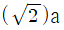
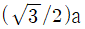
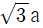
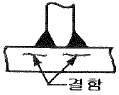
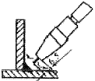
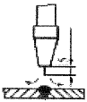
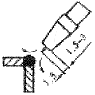
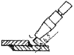

침투비파괴검사기사(구) (2006-03-05 기출문제)
1과목: 침투탐상시험원리
1. LOX(액체산소)사용 시험품을 후처리하는 방법 중 알맞은 것은?
- 증기세척
- 세제세척
- 알콜세척
- 주문주의 시방서에 따라
(정답률: 알수없음)

2. 후유화성 형광침투탐상법의 장점이 아닌 것은?
- 불연속 지시의 밝기가 높다.
- 수세성 방법에 비하여 산이나 크롬의 영향이 크다.
- 침투 시간이 비교적 짧다.
- 수세성으로는 발견할 수 없는 넓고 얕은 결함을 잘 검출할 수 있다.
(정답률: 알수없음)
3. 엽색 침투탐상검사의 탐상원리에 속하지 않는 것은?
- 작은 불연속일 경우에는 침투시간이 길어진다.
- 지시는 자외선 등에 조사되었을 때 빛을 발산한다.
- 침투제가 불연속에서 씻겨나갈 경우에는 지시가 나타나지 않는다.
- 침투제는 지시를 나타내기 위해 불연속에 침투한다.
(정답률: 알수없음)
4. 침투탐상시험에 사용하는 이상적인 침투제의 조건으로 틀린 것은?
- 매우 미세한 개구부에도 쉽게 침투되어야 한다.
- 증발이나 건조가 너무 빠르지 말 것
- 얕거나 벌어져 있는 개구부에서도 쉽게 세척되어야 한다.
- 얇은 도포막을 형성하여야 한다.
(정답률: 알수없음)
5. 다음 중 용제제거성 염색침투탐상시험으로 결함을 검출하는데 가장 부적합한 경우는?
- 아주 미세한 균열의 탐상
- 대형품이나 구조물의 부분적 탐상
- 수도나 전기시설이 없는 경우
- 시험장소를 어둡게 하기 곤란한 경우
(정답률: 알수없음)
6. 다음 중 침투 시간에 가장 영향을 많이 주는 날씨의 인자는?
- 온도
- 습도
- 풍속
- 날씨에 영향받지 않는다.
(정답률: 알수없음)
7. 침투제의 적용에 앞서서 시행하는 부품의 세척 방법에는 여러 가지가 있는 데 이 중 현실적으로 권고되고 있는 방법은?
- 샌드 또는 그리트(grit)브라스팅
- 용제 또는 화학물질이 들어있는 탱크
- 증기세척
- 물과 청정제가 혼합된 매체를 이용한 기계처리
(정답률: 알수없음)
8. 다음 중 자외선의 파장 3,650Å과 동일한 것은?
- 365nm
- 3650nm
- 36.5nm
- 3.65nm
(정답률: 알수없음)
9. 표면에 있는 과잉침투제 제거시 바람직한 세척 방법은?
- 결함내에 있는 침투제는 약간 제거되어도 되고 이외의 표면에 있는 침투제는 최소가 되도록 한다.
- 결함내에 있는 침투제는 약간 제거되어도 되고 이외의 표면에 있는 침투제는 완전히 가 되도록 한다.
- 결함내에 있는 침투제는 제거가 되어서는 안되고 이외의 표면에 있는 침투제는 최소가 되도록 한다.
- 결함내에 있는 침투제는 제거가 되어서는 안되고 이외의 표면에 있는 침투제는 완전히 제거가 되어야 한다.
(정답률: 알수없음)
10. 침투액의 적심성(Wetting Ability)을 옳게 나타낸 것은?
- 침투액이 검사표면을 적시는 능력
- 침투액의 침투 조건
- 침투액의 침투 속도
- 침투액의 증발 능력
(정답률: 알수없음)
11. 다음 중 모세관 현상을 결정하는 요인이 아닌 것은?
- 응집력
- 점착력
- 분무성
- 표면장력
(정답률: 알수없음)
12. 침투탐상검사 시험편의 사용 목적은?
- 검사체의 온도를 비교, 점검하기 위해 사용한다.
- 침투제의 성능을 비교, 점검하기 위해 사용한다.
- 관련지시와 비관련지시를 비교, 점검하기 위해 사용한다.
- 표면조건을 비교, 점검하기 위해 사용한다.
(정답률: 알수없음)
13. 주조품에서 수축균열이 발생하는 부위는 주로 어느 곳인가?
- 합금원소의 분포가 균일하지 못한 곳
- 얇은 곳
- 두꺼운 곳
- 두께변화가 심한 곳
(정답률: 알수없음)
14. 침투탐상시험에서 침투율을 조절할 수 있는 물리적 특성으로 다른 특성보다 침투력에 가장 큰 영향을 미치는 것들의 조합은?
- 침투제의 표면장력과 점성
- 침투제의 점성과 휘발성
- 침투제의 휘발성과 인화성
- 침투제의 적심성과 휘발성
(정답률: 알수없음)
15. 균열 검출에 사용되는 두 종류의 침투제에서 그들의 감도를 비교하는 방법으로 올바른 것은?
- 비중을 측정하기 위해 비중계를 사용한다.
- 균열이 존재하는 알루미늄 시편을 사용한다.
- 접촉각을 측정한다.
- 표면 장력을 측정한다.
(정답률: 알수없음)
16. 실물 및 모델에서 측정 가능하며, 실물의 전체적 스트레인 분포를 조사하는데 널리 이용되고, 저량화가 곤란한 응력 변형률 측정법은?
- 격자법
- 응력도료막법
- 홀로그라피법
- X선 응력측정법
(정답률: 알수없음)
17. 다음 중 수세성 침투액의 제거방법으로 가장 적당한 것은?
- 3.5kgf 이하의 저압으로 물을 분사시켜 세척한다.
- 3.5kgf 이하의 저압으로 물을 분사시켜 깨끗하게 세척한다.
- 거즈에 물을 묻혀 깨끗하게 닦아낸다.
- 주소에 담그어 깨끗하게 세척한다.
(정답률: 알수없음)
18. 어떤 하중하에서 결함ㄷ의 위치나 동적인 결함의 성장을 탐지할 수 있는 비파괴시험방법으로 다음 중 맞는 것은?
- 방사선투과시험
- 초음파탐상시험
- 레이저 홀로그라피
- 음향방출시험
(정답률: 알수없음)
19. 침투탐상시험에서 침투액과 용제(solvent)에 함유된 황이나 염소의 함량은 제한한다. 다음 중 특히 사용상 제한을 하는 재질은?
- 알루미늄 합금
- 니켈 합금
- 마그네슘 합금
- 동 합금
(정답률: 알수없음)
20. 침투제의 물리, 화학적 특성을 설명한 것으로 다음 중 옳은 것은?
- 침투제는 매우 빨리 건조되어야 한다.
- 침투제는 쉽게 제거되어서는 안된다.
- 침투제는 점성이 높아야 한다.
- 침투제는 침윤력이 우수해야 한다.
(정답률: 알수없음)
2과목: 침투탐상검사
21. 결함의 관찰 중 주의하여야 하는 의사지시의 원인이 아닌 것은?
- 리벳이음부 나사산의 지시
- 표면에 붙은 산화 스케일
- 기계적 불연속 지시
- 다공성 재료의 지시
(정답률: 알수없음)
22. 침투탐상시험의 현상제 성능검사에 대한 설명 중 틀린 것은?
- 건식 현상제는 육안으로 관찰한다.
- 습식 현상제는 비중계로 농도를 측정한다.
- 건식 현상제는 강도시험을 실시해야 한다.
- 습식 현상제는 그 제조회사의 권고치와 같으면 사용해도 좋다.
(정답률: 알수없음)
23. 형광침투탐상에 쓰이는 형광물질은 다음 중 어느 파장에 가장 민감한가?
- 39000Å
- 3650Å
- 4650Å
- 100Å
(정답률: 알수없음)
24. 다음 중 침투제나 현상제의 잔유물을 제거해 주는 후처리 과정이 필수적으로 요구되는 경우는?
- 다음의 공정이나 부품의 운전에 발해가 될 수 있는 경우
- 배경 색깔과 비교가 되는 경우
- 빨려 나온 침투제의 유화과정에 도움을 줄 수 있는 경우
- 격자형 구조물의 형성을 촉진시켜 줄 수 있는 경우
(정답률: 알수없음)
25. 유화제를 적용할 때 붓칠로 유화제의 적용을 권고하지 않는 가장 큰 이유는?
- 붓칠 적용은 침투액과 유화제의 혼합을 너무 빠르고 불규칙하게 하고 유화시간을 정확하게 조절하는 것을 불가능하게 하므로
- 붓칠로 적용하면 위험하지는 않지만, 붓의 재료와 유화제가 혼합되어 침투액과 검사체에 오염을 초래하므로
- 검사하는 동안 붓칠에 의해서 줄무늬를 나타나게 하므로
- 붓칠에 의해서 검사체의 도포를 항시 완전하게 할 수 없으며, 검사체의 부분세척을 어렵게 하므로
(정답률: 알수없음)
26. 침투탐상시험 결과 시편 표면에 나타나는 둥근 지시모양은 어떤 것에 기인된 것인가?
- 핫티어(hot tear)
- 피로 터짐(fatigue crack)
- 기공(gas holes)
- 용접 겹침(weld laps)
(정답률: 알수없음)
27. 100,000ℓ 용량의 저유 탱크가 건설중에 있다. 건설시방서에는 용접부위에 대하여 염색침투탐상시험 및 내압시험을 실시해야 한다고 명시되어 있다. 침투탐상시험과 내압시험을 실시하는 시기로 제일 적당한 방법은?
- 압력시험은 침투탐상시험전에 행하여야 한다.
- 침투탐상시험은 압력시험전에 실시해야 한다.
- 압력시험에서 발견된 부위만을 보수 후 침투탐상시험을 행한다.
- 압력시험 전후에 걸쳐 침투탐상시험을 실시하는 것이 원칙이다.
(정답률: 알수없음)
28. 다음의 불연속 중 침투탐상시험법으로 검출할 수 없는 것은?
- 표면기공
- 표면균열
- 표면직하 기공
- 금속튜브의 누설
(정답률: 알수없음)
29. 침투제의 성능을 조사하기 위한 일반적인 방법은?
- 침투액의 점도 조사
- 침투액 적심성 조사
- 침투액 휘발성 조사
- 인공결함시험편의 두 부분을 비교 조사
(정답률: 알수없음)
30. 수도, 전원 설비가 없는 장소에서 침투탐상시험을 실시할 경우 다음 어느 침투액을 사용하는 것이 좋은가?
- 용제제거성 염색침투액
- 용제제거성 형광침투액
- 후유화성 염색침투액
- 후유화성 형광침투액
(정답률: 알수없음)
31. 시험페의 표면온도가 과다하게 높은 경우 침투탐상시험에서 유발되는 가장 직접적인 문제는?
- 침투제의 점도가 매우 커지게 된다.
- 침투제 표면장력이 증가하게 된다.
- 접촉각이 증가하게 된다.
- 침투제의 휘발성 재료가 소실하게 된다.
(정답률: 알수없음)
32. 건조처리는 세척처리방법과 현상법에 따라 다르다. 그 적용시기의 조합이 틀린 것은?
- 습식현상법-세척처리후 건조처리
- 건식현상법-세척처리후 건조처리
- 속건식현상법-세척처리후 건조처리
- 무현상법-세척처리후 가열처리
(정답률: 알수없음)
33. 침투탐상시험을 할 때 침투시간은 온도에 따라 어떻게 하여야 하는가?
- 3~50℃ 범위에서는 온도를 고려하여 침투시간을 줄이고, 온도가 내려가면 침투시간을 늘리며, 이 온도 범위를 벗어나면 침투액의 종류 등을 고려하여 정한다.
- 3~15℃의 온도 범위에서 온도가 올라가면 침투시간을 줄이고 온도가 내려가면 침투시간을 늘려야 한다.
- 15~50℃의 온도범위를 표준으로 하여 침투시간을 정한다.
- 3~50℃에서는 일정한 침투시간 적용하고 이 범위를 벗어나면 시험체의 온도에 따라 침투시간을 따로 정한다.
(정답률: 알수없음)
34. 침투탐상검사의 레이저빔 스캐닝(Laser beam scanning) 장비를 사용하여 검사할 때 적정한 레이저빔의 직경은?
- 1μm
- 1mm
- 1cm
- 10cm
(정답률: 알수없음)
35. 침투탐상시험에 사용되는 일반적인 자외선등의 종류는?
- 고압 백열등
- 튜브형 BL 형광 램프
- 밀봉된 수은등 램프
- 금속제 탄소아크 전구
(정답률: 알수없음)
36. 나사부의 침투탐상시험으로 가장 적합한 검사 방법은?
- 형광침투 용제법
- 염색침투 유화제법
- 염색침투 수세법
- 형광침투 유화제법
(정답률: 알수없음)
37. 용제제거성 염색침투탐상시험에서 잉여 침투액을 제거하기 위한 세척액이 지녀야 할 가장 중요한 기능은?
- 유기 용제의 기능
- 확산의 기능
- 표면장력을 증가시키는 기능
- 점착력을 증가시키는 기능
(정답률: 알수없음)
38. 다음 중 침투탐상시험의 장점이라고 할 수 없는 것은?
- 시험방법이 비교적 간단하다.
- 의사지시가 적어 판독이 용이하다.
- 국부적인 검사가 가능하다.
- 재질에 관계없이 모든 재질의 표면검사가 가능하다.
(정답률: 알수없음)
39. 침투탐상시험 결과 무관련 지시가 많이 나타나는데 이에 대한 가장 큰 원인으로 볼 수 있는 것은?
- 불충분한 침투시간
- 불충분한 침투제의 제거
- 부적당한 열처리
- 과도한 침투시간
(정답률: 알수없음)
40. 침투탐상시험시 VC-S 방법은 많이 사용하나 VC-D 방법은 사용빈도가 낮은 가장 큰 이유는?
- 조작이 복잡하다.
- 침투액 흡수가 나쁘다.
- 분말 비산이 심하다.
- 대조가 용이하지 않다.
(정답률: 알수없음)
3과목: 침투탐상관련규격
41. 침투탐상검사의 결함 분류를 KS B 0816에 따라 한다면 다음 중 맞지 않은 것은?
- 군집 결함
- 독립 결함
- 연속 결함
- 분산 결함
(정답률: 알수없음)
42. ASME Sec. Ⅲ Div.1 침투탐상시험의 판정기준에 대한 설명이다. 틀린 것은?
- 가장 큰 치수가 1/16인치 보다 큰 지시는 관련지시로 간주한다.
- 균열로 예상되는 선형관련지시는 길이에 관계없이 불합격이다.
- 균열이 아닌 선형관련지시는 1/16인치 이상인 경우 불합격이다.
- 원형관련지시는 3/16인치 이상인 경우 불합격이다.
(정답률: 알수없음)
43. ASTM 165에서 침투탐상시험을 분류 시 Method A, Type Ⅰ은 어떤 탐상방법을 말하는가?
- 수세성 염색침투탐상시험
- 용제제거성 염색침투탐상시험
- 수세성 형광침투탐상시험
- 후유화성 형광침투탐상시험
(정답률: 알수없음)
44. ASME-E-165에 규정된 침투탐상 기법이 아닌 것은?
- 수세성 형광침투탐상시험
- 후유화성 염색침투탐상시험
- 용제제거성 형광침투탐상시험
- 용제제거성 염색침투탐상시험
(정답률: 알수없음)
45. KS W 0914에 의한 침투탐상시험 시 검사원의 기량 인정은 어느 규격에 따라 취득하여야 하는가?
- MIL.-STD-410
- MIL.-P-47158
- MIL.-STD-792
- KS B 0816
(정답률: 알수없음)
46. KS D 0816에 따른 침투탐상시 전수검사를 수행한 시험품에 합격표시가 필요한 경우의 표시 방법 중 틀린 내용은?
- 각인 또는 부식에 의한 표시를 할 때에는 P의 기호를 사용한다.
- 각인 또는 부식에 의한 표시가 곤란할 때는 착색(적갈색)한다.
- 시험품에 표시할 수 없을 경우는 시험기록에 기재한 방법에 따른다.
- 시험품에 Ⓟ의 기호 또는 착색(황색) 표시한다.
(정답률: 알수없음)
47. KS D 0816에 따라 침투탐상검사를 마친 후 검사보고서에 반드시 기록하지 않아도 되는 항목은?
- 액온이 15℃이하일 때 침투액의 온도
- 기온이 15~50℃일 때 시험 장소의 기온
- 현상제의 적용방법
- 전처리의 방법
(정답률: 알수없음)
48. ASME Sec.V Art.6 침투탐상시험의 침투탐상 비교시험편의 제작에 관한 설명이다. 옳은 것은?
- 비교시험편의 재질은 시험대상 재료와 동일해야 한다.
- 비교시험편은 냉각 후 반으로 절단하여 A 및 B로 표시하여 사용한다.
- 비교시험편은 가열 후 공기중에 천천히 냉각시킨다.
- 가열하기 전에 비교시험편의 각 면의 중심에 지름 약 1인치의 부위를 온도측정 도료로 표시해야 한다.
(정답률: 알수없음)
49. ASME E=165에 따른 과잉침투제 제거시 사용할 수압으로 적합한 것은?
- 60psi
- 50psi
- 40psi
- 70psi
(정답률: 알수없음)
50. ASME Sec.V Art.24 SE-165 규정을 참고하여 주조에서 발생되는 불연속이 아닌 것은?
- 수축 균열
- 스트링거(stringer)
- 기공
- 콜트셧(cold shut)
(정답률: 알수없음)
51. 침투탐상시험시 ASME Sec.V 에서는 표면상태를 검사 조건에 맞도록 기름, 모래, 녹, 페인트, 슬래그 등이 없도록 청결하게 유지하여야 한다. 만약 용접부 검사를 수행한다면 검사 부위와 그 부위에서 양쪽으로 최소 몇 인치 이내를 표면 전처리 하도록 요구하는가?
- 0.5인치
- 1인치
- 3인치
- 5인치
(정답률: 알수없음)
52. ASME Sec.V Art.6에 의한 침투탐상시험의 불순물 관리에 관한 설명이다. 옳은 것은?
- 비철합금에 사용되는 모든 탐상제는 불순물 함유량에 대한 증명서를 확보해야 한다.
- 니켈합금을 시험할 경우 염소와 불소함유량 분석을 실시해야 한다.
- 오스테아니트강, 티타늄을 시험할 경우 황 함유량을 분석해야 한다.
- 분석을 위하여 가열할 경우 발생된 증기를 제거할 수 있는 적당한 통풍장치가 필요하다.
(정답률: 알수없음)
53. KS B 0816에 의한 침투탐상시험시 속건식현상제를 사용하는 경우 적용 방법과 건조 방법으로 알맞은 것은?
- 침지법, 자연 건조
- 유동상법, 가열 건조
- 분무법, 자연 건조
- 분말도포 노즐법, 실온 건조
(정답률: 알수없음)
54. KS B 0816에서 시험의 순서를 ‘전처리-침투처리-제거처리-현상처리-관찰-후처리’ 와 같이 하는 방법은?
- FA-D
- DFA-W
- FB-D
- FC-D
(정답률: 알수없음)
55. 침투탐상시험시 표면상태는 검사에 중요한 요소이다. ASME E-165에서 표면의 전처리 방법 중 불연속의 변형으로 시험결과의 감도 저하를 우려하고 있는 것은?
- 증기 세척
- 초음파 세척
- 샌드 블라스트
- 산 세척
(정답률: 알수없음)
56. 웹서비스에서 제공되는 여러 가지 자원들에 대한 주소를 나타내는 것은?
- HTTP
- URL
- HTML
- XML
(정답률: 알수없음)
57. 인터넷에서 내부 컴퓨터 네트워크를 외부 환경으로부터 보호하기 위하여 이용되는 것은?
- 고퍼(Gopher)
- 아키(Archie)
- FTP 서버
- 프럭시(Proxy) 서버
(정답률: 알수없음)
58. 다음 중 인터넷 관련 전자우편 표준 통신 규약은?
- PPP
- SMTP
- UDP
- ARP
(정답률: 알수없음)
59. 컴퓨터의 주기억장치와 중앙처리 장치 사이에서 프로그램 실행 속도차를 해결하는데 도움을 주는 고속 기억장치는?
- 가상메모리
- 보조기억장치
- 반도체 기억장치
- 캐시기억장치
(정답률: 알수없음)
60. 표 형식으로 데이터를 입력하고 합, 평균, 그래프 등 다양한 업무의 편의를 제공하는 스프트웨어는?
- 스프레드시트
- 데이터베이스
- 문서편집기
- 파워포인트
(정답률: 알수없음)
4과목: 금속재료학
61. 강을 침탄 이후 침탄부를 경화시키기 위한 조작방법으로 가장 적합한 것은?
- Ac1 온도 이하에서 가열 후 수중에서 담금질
- Ac1 온도 이상까지 가열 후 수중에서 담금질
- 풀림(annealing)
- 뜨임(tempering)
(정답률: 알수없음)
62. 스프링강의 가장 좋은 결정 조직은?
- 페라이트(ferrite)
- 시멘타이트(cementite)
- 미디움펄라이트(midum pearlite)
- 오스테나이트(austenite)
(정답률: 알수없음)
63. 강에서 Cold shor tness의 원인이 되며 고스트라인을 일으켜 파괴의 원인이 되는 것은?
- C
- P
- S
- Mn
(정답률: 알수없음)
64. 강의 담금질 경화능(Hardenability)을 측정하는 시험은?
- 초단파시험
- 자기이력시험
- 전자유도시험
- 조미니시험
(정답률: 알수없음)
65. 침탄 후 시행하는 열처리로서 1차 담금질의 목적은?
- 침탄층의 경화
- 중심부의 연화
- 침탄층의 조직 미세화
- 중심부 조직의 미세화
(정답률: 알수없음)
66. Al을 주성분으로 하는 합금에 대한 설명으로 틀린 것은?
- Al에 Cu, Si, Mg등을 첨가하면 기계적 성질이 우수해진다.
- 시효처리하여 기계적 성질을 개성할 수 있다.
- 항공기, 자동차 부품 등 경량부품에 널리 사용된다.
- Al도 변태적이 있기 때문에 강에서처럼 열처리에 따라 기계적 성질을 크게 변화시킬 수 있다.
(정답률: 알수없음)
67. 강에서 첨가원소 W(텅스텐)이 미치는 효과에 대한 설명 중 틀린 것은?
- Fe 중에 용해되어 결정입자를 미세화 하며 강한 복탄화물을 형성한다.
- W은 강의 경도를 증가시키며 경화효과는 Cr 강보다 양호하다.
- W은 잔류 자기 유지력이 크므로 영구자석용에 적당하다.
- 저온 강도가 크므로 고온재료에 사용하기 곤란하다.
(정답률: 알수없음)
68. Ni 4~8%의 martensite 조직의 것으로 보통 Cr을 첨가해서 백주철로 사용하는 주철은 무엇인가?
- 칠트(chilled) 주철
- 가단 주철
- Ni-hard 주철
- 미해나이트(meehanite) 주철
(정답률: 알수없음)
69. 청동의 주성분은?
- Cu+Mn
- Cu+Zn
- Cu+Sn
- Cu+Fe
(정답률: 알수없음)
70. 내마모성이 필요한 곳에 널리 사용되는 것으로 표면은 단단하고 내부는 인성이 있는 주철재료서 압연용 롤, 차륜등의 내마모 기계부품에 이용하는 주철은?
- 칠드(冷硬)주철
- 흑심가단주철
- Al주철
- Ni주철
(정답률: 알수없음)
71. 알루미늄 합금의 종별 기호 다음에 첨부하는 질별기호 중 담금질 후 인공시효경화 시킨 것을 나타내는 기호는?
- To
- T2
- T6
- T10
(정답률: 알수없음)
72. BCC 결정 구조에서 격자 정수를 a라 할 때 근접원자간 거리는?

- 2a


(정답률: 알수없음)
73. 가스침탄법에 관한 설명 중 틀린 것은?
- 가스로는 천연가스, 도시가스 및 프로판가스 등을 사용할 수 있다.
- 표면의 광택을 유지하면서 처리할 수 있다.
- 작업이 간단하고, 침탄이 균일하게 되며 표면 탄소농도의 조절이 가능하다.
- 침탄성 가스가 분해되면서 생긴 석출탄소가 침탄되며 이 때 생긴 CO2는 침탄성을 향상시킨다.
(정답률: 알수없음)
74. 철강조직 중에서 확산(擴散)을 수반하는 상변화에 의하여 생성된 조직이 아닌 것은?
- 펄라이트
- 베이나이트
- 마텐자이트
- 트루스타이트
(정답률: 알수없음)
75. 구리의 성질을 설명한 것 중 맞는 것은?
- 결정구조는 상온에서 BOC이다.
- 전기와 열의 부도체이다.
- 화학적 저항력이 작아서 부식이 잘 된다.
- 구리 중의 불순물은 냉간가공보다 열간가공시에 큰 영향을 미친다.
(정답률: 알수없음)
76. 색상이 미려하고, 연성이 커서 장식용으로 많이 쓰이는 아연이 5~20% 포함된 구리합금은?
- 포금
- 델타메탈
- 문쯔메탈
- 톰백
(정답률: 알수없음)
77. 다음의 합금원소 중에서 강의 경화능을 감소시키는 합금원소는 무엇인가?
- Co
- Si
- Mn
- Cr
(정답률: 알수없음)
78. 재료가 영구히 파괴되지 않는 응력 중 최대의 것은?
- 크리프 한도
- 항복응력
- 에릭센값
- 피로한도
(정답률: 알수없음)
79. 열팽창 계수가 대단히 적고, 내식성이 좋으므로 측량척, 바이메탈 등에 사용되는 합금은?
- Fe-36% Ni (Invar)
- Cu-20% Ni (Cupronickel)
- Cu-60% Ni (Monel metal)
- Fe-78.5% (permalloy)
(정답률: 알수없음)
80. 주조성이 좋고 크리프 특성이 좋아 제트엔진(Jet engine)등의 구조용재료로 가장 많이 사용되는 합금은?
- Al 합금
- Mg 합금
- Ni 합금
- Zn 합금
(정답률: 알수없음)
5과목: 용접일반
81. 스테인레스 강의 TIG 용접과 MIF 용접에 관한 일반적인 설명으로 틀린 것은?
- 보로가스로는 알곤가스를 사용한다.
- 직류 정극성을 사용하면 깊은 용입을 얻을 수 있다.
- 3mm 이하의 박판에는 TIG 용접보다 MIG 용접이 더 많이 사용된다.
- 피복 아크용접시 일반적으로 역극성이 사용된다.
(정답률: 알수없음)
82. 알루미늄 합금용접에 일반적으로 불활성가스 아크용접을 하는 이유로 가장 적합한 것은?
- 팽창계수가 적기 때문이다.
- 비열 및 열전도도가 크므로 단시간에 용접온도를 높여야 한다.
- 고온강도가 나쁘며 용접변형이 작기 때문이다.
- 비중이 가볍기 때문이다.
(정답률: 알수없음)
83. 산소-아세틸렌 용접불꽃의 설명으로 틀린 것은?
- 중성 불꽃에서는 산소와 아세틸렌의 공급량이 같다.
- 환원 불꽃은 아세틸렌의 공급이 너무 많을 때이다.
- 산화 불꽃은 산소의 공급량이 과다할 때이다.
- 온도가 가장 높은 불꽃은 탄화 불꽃이다.
(정답률: 알수없음)
84. 피복 아크 용접봉 피복제의 작용 설명으로 올바른 것은?
- 용융점이 높은 점성의 슬랙을 만든다.
- 용접금속의 응고 및 냉각속도를 빠르게 한다.
- 슬랙의 제거를 어렵게 하여 깨끗한 용접명을 만든다.
- 용접금속에 합금원소를 첨가하여 기계적 성질을 좋게 한다.
(정답률: 알수없음)
85. 브레이징 미음매 부분에 미리 솔더를 놓고 가열하여 행하는 브레이징으로 정의되는 용접 용어는?
- 침적 브레이징(dip brazung)
- 단계적 브레이징(step brazing)
- 예치 브레이징(preplaced brazing)
- 면메김 브레이징(face-fed brazing)
(정답률: 알수없음)
86. 정격 2차전류가 300A, 정격 사용율이 40%인 아크 용접기에서 200A로 용접시의 허용사용율은?
- 17.8[%]
- 60 [%]
- 90 [%]
- 100 [%]
(정답률: 알수없음)
87. 피복 아크용접에서의 아크길이와 아크전압과의 관계 설명으로 가장 적합한 것은?
- 아크 길이가 길어져도 아크 전압은 일정하다.
- 아크 길이가 길어지면 아크 전압은 증가하다.
- 아크 길이가 짧아지면 아크 전압은 증가하다.
- 아크 길이와 아크 전압은 서로 관계가 없다.
(정답률: 알수없음)
88. 직류 아크의 전압 분포에 대한 설명으로 올바른 것은?
- 아크발생 중 전압강하는 양극의 전구간에서 일정하다.
- 아크길이는 전류세기와 비례한다.
- 아크기둥의 전압강하는 피복제의 종류와는 관계없다.
- 아크길이를 일정하게 하면 전압은 전류의 증가에 따라 약간 증가한다.
(정답률: 알수없음)
89. 다음 중 저하용접이 아닌 것은?
- 프로젝션(projection)용접
- 플라스마(plasma)용접
- 퍼커션(percussion)용접
- 플래시(flash)용접
(정답률: 알수없음)
90. 맞대기 이음에 있어서 용접이 진행됨에 따라서 간격이 벌어진다든지, 좁혀진다든지 하는 변형에 가장 적합한 용어는?
- 회전변형
- 세로굽힘 변형
- 좌굴변형
- 각변형(가로굽힘 변형)
(정답률: 알수없음)
91. 용접부에서 구조상의 용접 결함이 아닌 치수상의 결함인 것은?
- 균열
- 용접부 크기의 부적당
- 융합 불량
- 비금속 개재물
(정답률: 알수없음)
92. 아크 전압이 20V, 아크전류는 150A, 용접속도가 15cm/min일 때 용접 입열은 몇 Joule/cm 인가?
- 12000
- 24000
- 20000
- 45000
(정답률: 알수없음)
93. 일반적인 연강용 피복 아크 용접봉의 피복제 역할이 아닌 것은?
- 용착금속의 응고와 냉각속도를 빠르게 한다.
- 용착금속(Weld Metal)의 탈산 및 정련작용을 한다.
- 용융점이 낮은 적당한 점성을 가진 가벼운 슬래그(slag)를 만든다.
- 중성 또는 환원성 분위기를 만들어 대기 중 산소나 질소의 침입을 방지하고 용착금속을 보호한다.
(정답률: 알수없음)
94. 탄산가스 아크용접시 전진법에 비교하여 후진법을 설명한 것으로 가장 올바른 것은?
- 용입이 비교적 얕다.
- 용접비드 높이가 비교적 높다.
- 스패터 발생이 전진법보다 많다.
- 용접 비드 폭이 비교적 넓다.
(정답률: 알수없음)
95. 다음 그림에서와 같이 모서리 이음, T이음 등에서 볼 수 있는 결함으로 강의 내부에 모재 표면과 평행하게 층상으로 발생하는 결함은?

- 라멜라 테어(Lamellar tea)
- 토 균열(Toe crack)
- 라미네이션(Lamination)
- 루트 균열(Root crack)
(정답률: 알수없음)
96. KS 피복아크 용접봉 기호 중 저수소계 용접봉인 것은?
- E 4310
- E 4303
- E 4316
- E 4326
(정답률: 알수없음)
97. 불활성가스 텅스텐 아크 용접기로 알루미늄을 용접할 경우 전극봉의 돌출길이가 보호 효과나 작업성에 중요한 영향을 미치는데, 다음 이음 중 아르곤 보호가스 량이 가장 많이 필요로 하는 이음은?




(정답률: 알수없음)
98. 탄산가스 아크용접에서 와이어 팁과 모재 사이(돌출길이)가 길 때 생기는 중요한 결함에 대한 설명으로 가장 적합한 것은?
- 스패터가 적어진다.
- 슬랙 혼입이 생기기 쉽다.
- 언더컷이 생기기 쉽다.
- 용입 불량이 생기기 쉽다.
(정답률: 알수없음)
99. 주철 모재에 연강봉의 용접봉을 사용하면 반드시 파열이 생기는데 그 원인과 가장 관계가 적은 것은?
- 탄소의 함유량이 다르기 때문
- 강과 주철의 용융점이 다르기 때문
- 강과 주철의 팽창계수가 다르기 때문
- 전기 전도도가 다르기 때문
(정답률: 알수없음)
100. 용접부에 생기는 잔류 응력을 제거하려면 다음 중 어떤 처리를 하면 가장 좋은가?
- 풀림을 한다.
- 불림을 한다.
- 담금질을 한다.
- 뜨임을 한다.
(정답률: 알수없음)